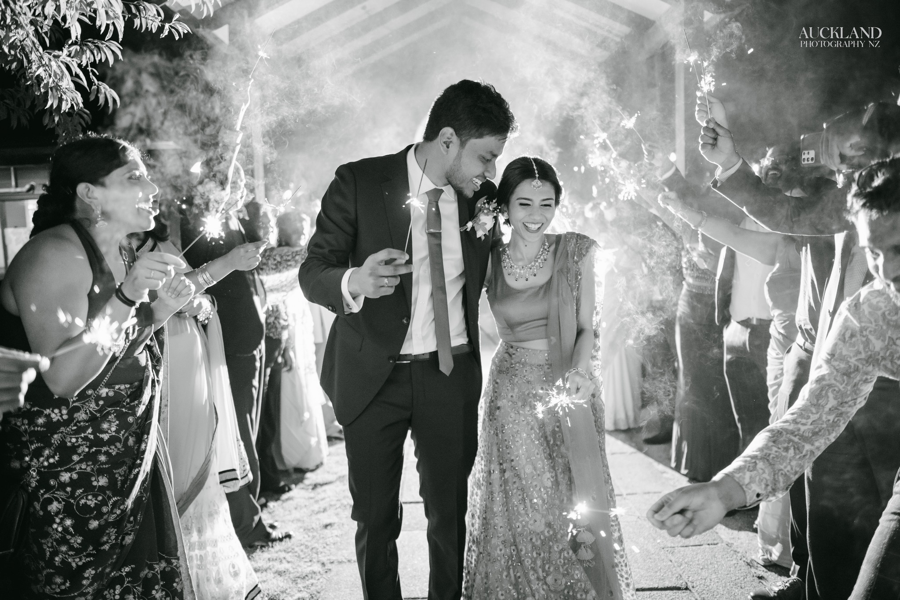

New Zealand Photographer who reaches above and beyond to capture the best moments of yours
That wonderful day you have dreamed of since your childhood, and when it becomes true, it becomes your special day with your loved ones. Celebration is precious and needed to remember as you share the journey. When you think of that special day, we can give you a big assurance by capturing your happiness and precious moments. Naturally, it will become a blessing to your new lives together and to your loved ones.

WEDDING DAY | SHANIKA & SITHIKA
VERY FIRST STUDIO SESSION

WEDDING DAY | SHERINE & PRAMITHA
×